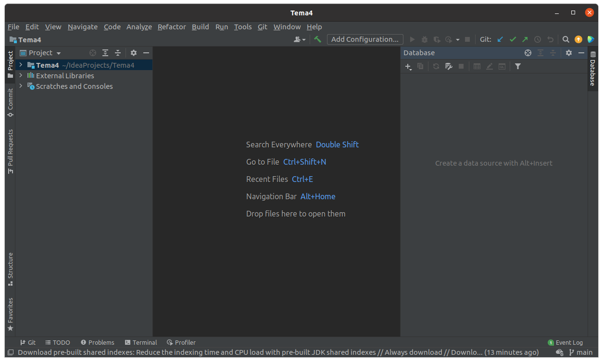

4.1 - Des de IntelliJ
Des dels programes Java o Kotlin podríem connectar ja mateix a les diferents BD amb els connectors JDBC, però abans ens faria falta poder veure les taules amb les dades i fins i tot administrar aquestes Bases de Dades.
Això es pot fer des d'IntelliJ sense molt fàcilment, ja que en la nostra versió ho tenim integrat per defecte. Utilitzarem els connectors (drivers) JDBC, per a connectar a les Bases de Dades, però d'una forma independent dels projectes. La manera d'accedir és:
Wiew --> Tool Windows --> Database
i se'ns obrirà una subfinestra a la dreta per a poder "treballar" amb les Bases de Dades

Des d'aquesta finestra podrem controlar les connexions a Bases de Dades i també els Drivers JDBC que ens permeten connectar. Com hem comentat serà independent dels projectes Java o Kotlin
Connexió a PostgreSQL
Com a primer exemple de connexió, intentarem connectar a PostgreSQL. Farà falta especificar:
- Les dades de connexió, que seran:
- Servidor (host): 89.36.214.106
- Port: 5432 (és el port per defecte)
- Usuari: geo
- Contrasenya: geo
- Base de dades: geo
- En el moment que demana pel controlador (driver) de PostgreSQL, apretar a baixar. Serà un de tipus IV. Açò només serà necessari la primera vegada que connectem a PostgreSQL
De la configuració anterior podem observar la URL de connexió que va a continuació. És important, perquè després quan connectem des dels nostres programes Java, haurem d'especificar-la també. Haurem de substituir servidor per l'adreça IP o el nom del servidor, la base_de_dades per la base de dades a la qual ens volem connectar.
URL de PostgreSQL
jdbc:postgresql://servidor:5432/base_de_dades
que en el nostre exemple ha quedat:
jdbc:postgresql://89.36.214.106:5432/geo
Connexió a MySQL
Repetim el procés per a MySQL. El servidor està en la mateixa màquina que PostgreSQL (89.36.214.106). L'usuari amb que connectarem ara es diu factura. Haurem d'especificar:
- Les dades de connexió, que seran:
- Servidor: 89.36.214.106
- Port: 3306
- Usuari: factura
- Contrasenya: factura
- Base de dades: factura
- Quan demane pel controlador (driver) de MySQL, haurem d'apretar a baixar. Açò només serà necessari la primera vegada que connectem a MySQL
URL de MySQL
jdbc:mysql://servidor:3306/base_de_dades
que en el nostre exemple queda:
jdbc:mysql://89.36.214.106:3306/factura
Connexió a SQLite
SQLite és un SGBD molt diferent als anteriors. En tots els anteriors s'utilitza l'arquitectura client-servidor. I per tant el servidor de Base de Dades no té per què estar en la mateixa màquina.
Però en moltes ocasions ens pot venir bé un SGBD molt més xicotet i senzill que guarde la BD en la mateixa màquina, que siga monousuari i que pese molt poc.
SQLite és un SGBD multiplataforma (podrem fer-lo rodar en qualsevol plataforma) que és molt lleuger. Admet la major part de l'estàndar SQL-92. I guarda una Base de Dades en un únic fitxer. Una altra característica és que des de Java o Kotlin, amb el driver JDBC podrem accedir a les Bases de Dades SQLite sense que faça falta cap motor de Base de Dades. Per tant és ideal com a Base de Dades que puguem copiar a les nostres aplicacions.
Quan connectem des de IntelliJ ara no caldrà especificar on està el servidor ni quin usuari s'ha de connectar. Haurem de dir el fitxer amb la ruta on està (o estarà) la Base de Dades. Per tant només haurem d'especificar:
- Les dades del fitxer: ruta i nom. La ruta ha d'existir. Si el fitxer no existeix, el crearà.
- Quan ens diga baixarem el Driver. Això només ens caldrà la primera vegada que connectem amb SQLite
URL de SQLite
jdbc:sqlite:ruta_del_fitxer_sqlite
Com hem comentat, SQLite és més senzill que els altres SGBD. Concretament, els tipus de dades que utilitza són:
-
INTEGER. El valor és un enter amb signe, que ocupa 1, 2, 3, 4, 6, o 8 bytes depenent de la grandària del valor.
-
REAL. El valor és un número real en coma flotant que ocupa 8 bytes (doble precisió).
-
TEXT. El valor és una cadena de caràcters que pot estar codificada en UTF-8, UTF-16BE o UTF-16LE, depenent de la codificació de la Base de Dades. No ens preocuparem de la codificació interna.
-
BLOB. Per a guardar dades binàries que es guardaran exactament com entren, sense mirar el format.
Des de l'entorn d'IntelliJ podrem visualitzar les taules i fins i tot crear-les, amb SQL.
Llicenciat sota la Llicència Creative Commons Reconeixement CompartirIgual 2.5